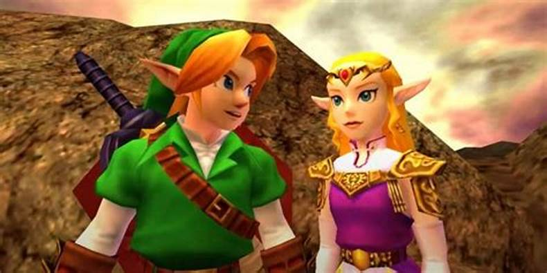

Link vit paisiblement dans la forêt Kokiri. Un jour l'Arbre Mojo, l'esprit protecteur de la forêt, envoie une fée, Naavi, pour réveiller Link. L’arbre géant convoque Link pour lui parler. Il lui explique que ses origines ne sont pas dans la forêt, comme les autres enfants qui peuplent celle-ci, et qu'il a une quête à accomplir : sauver Hyrule d'un vil cavalier du désert ,Ganodorf, car celui-ci désire s'emparer de la Triforce. C'est alors que commence sa quête. Il reçoit de l'Arbre Mojo la pierre ancestrale de la forêt, qu'il doit remettre à la princesse d'Hyrule, Zelda. Celle-ci lui demande de ramener deux autres pierres qui permettront de desceller la porte du temple du Temps à l'aide de l’Ocarina du Temps. Derrière cette porte repose l’épée de Légende qui fera de Link, projeté dans le temps grâce à elle et équipé de l'ocarina, le héros du temps.
Après avoir entonné le chant du Temps avec l'ocarina du Temps devant le piédestal des trois pierres ancestrales, la porte du temple s’ouvre devant Link. Il s’empare alors de l’épée de Légende, et rencontre Rauru, l'un des sept sages protecteurs de la Triforce qui lui apprend que l'épée avait endormi son âme pendant sept années, durant lesquelles le vil Ganondorf a envahi Hyrule… Link est devenu plus grand et plus puissant. Il pourra ainsi voyager dans le temps en insérant l'épée de Légende dans son socle de granit pour rajeunir ou en la retirant pour passer à l'âge adulte. À l'âge adulte, Link ne peut plus utiliser certains objets de son enfance mais en revanche, il peut monter une jument, Epona.
Sa quête est maintenant d'éveiller les six autres sages d'Hyrule pour battre Ganondorf. Pour cela, il est guidé par le mystérieux Sheik, qui se révèle au final être la princesse Zelda, à l’âge adulte. Au terme de sa quête, un combat épique attend Link pour enfin défier Ganondorf dans sa grande tour maléfique. Zelda, qui était retenue prisonnière et qui est venue porter assisantce à Link après qu’il l’ait libérée, utilise ses pouvoirs pour immobiliser Ganon. Link lui donne alors le coup de grâce avec son épée. Ils finnissent donc par triompher du Roi Démon, et le royaume d’Hyrule retrouve à nouveau la prospérité.
